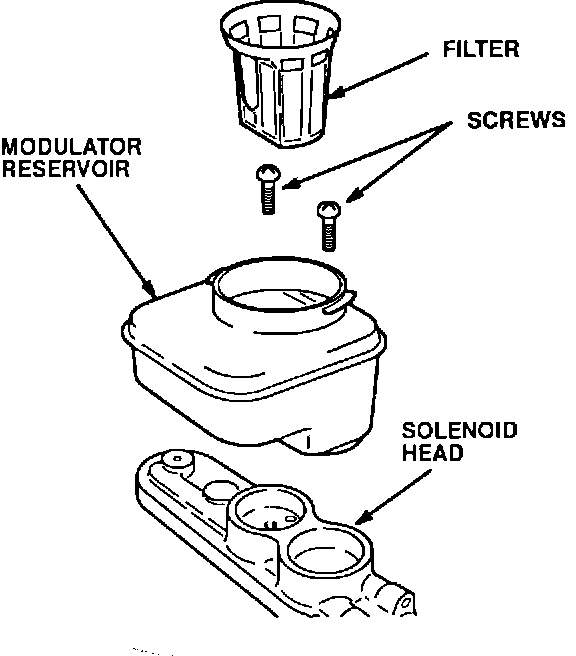
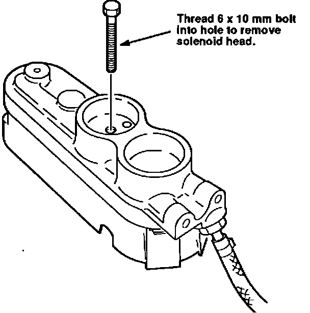
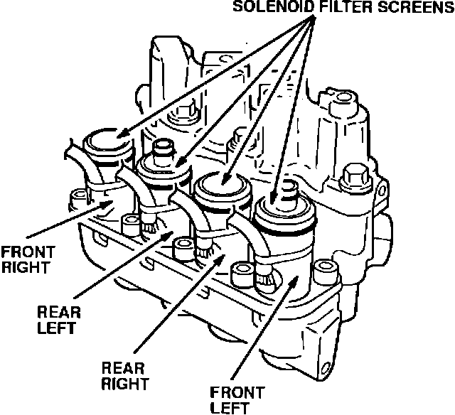
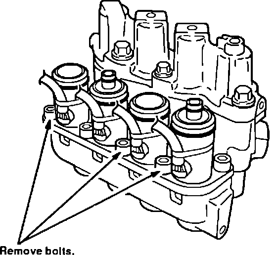
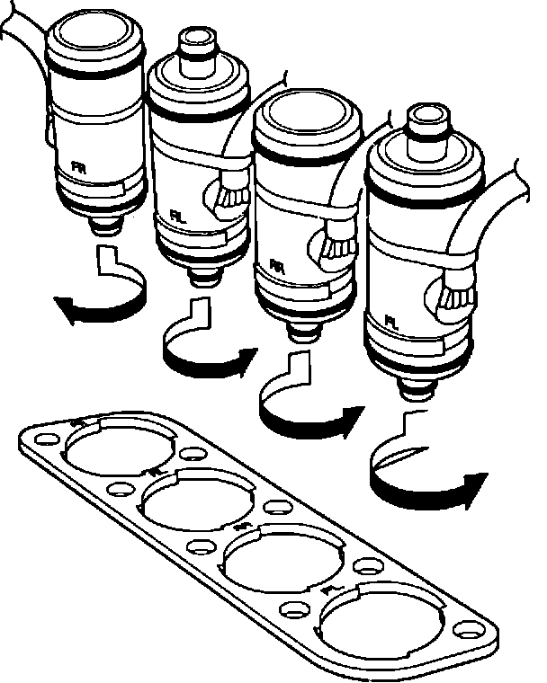
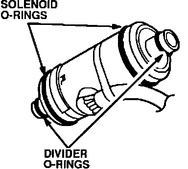
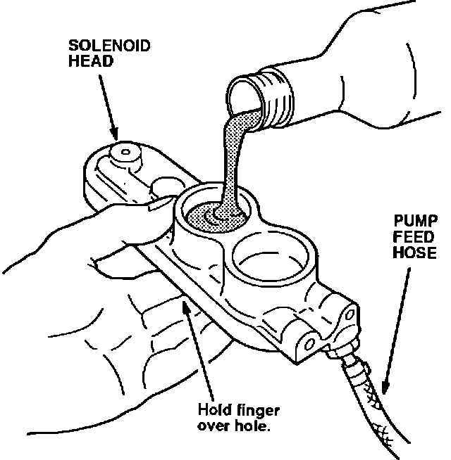

Solenoid Replacement
NOTE:^ Before disassembling the modulator, clean and blow dry the area around the modulator
^ This procedure can also be used to replace a leaking solenoid O-ring.
1. Remove the cruise control actuator mounting bolts, disconnect the actuator connector, then rest the actuator on the spare tire.
2. Bleed high pressure fluid from the maintenance bleeder with the Bleeder T-wrench, then retighten the bleeder.
3. Remove the brake fluid from the modulator reservoir with a syringe. Leave the pump feed hose connected to the solenoid head.
4. Disconnect the four solenoid connectors.

5. Remove the two screws from inside the modulator reservoir, then remove the reservoir from the solenoid head. Remove the bolt and support bracket for the pump feed hose. If brake fluid contacts the paint, wash it off immediately with water.

6. Thread a 6 x 1 x 50 mm bolt (or longer) into the threaded hole above the second solenoid from the front of the modulator. Turn the bolt clockwise until the solenoid head begins to lift, then carefully rock the head and lift it off of the solenoids. Set the solenoid head off to the side without disconnecting the pump feed hose.
7. Remove the solenoid harness grommets from the solenoid cover, then remove the cover.

8. Remove the motor relay from the under-hood fuse/relay box. Connect the Auxiliary Window Switch as described in step 2 of "Solenoid Flushing." While watching the filter screens on top of the solenoids, run the pump for two or three seconds. Brake fluid will flow from the filter screen of the leaking solenoid. It is highly unlikely that more than one solenoid will be leaking. Replace only the one that leaks.

9. Open the maintenance bleeder with the Bleeder T-wrench. Loosen all of the solenoid set-plate bolts. Remove the three bolts shown.

10. To remove the leaking solenoid, first push it down to unstick the O-rings, then pull it up while holding the set-plate up slightly. Turn the solenoid in the direction shown until it can be removed.

11. Coat the new O-rings with clean brake fluid, then install them on the new solenoid.

12. Apply a film of clean brake fluid to the solenoid body and O-rings, then carefully install the solenoid in the modulator body.
13. Reinstall the set-plate bolts that you removed in step 9, then tighten all the set-plate bolts until snug. Torque the set-plate bolts to 15 N-m (1.5 kg-m, 11 lb.ft.).
14. Close the maintenance bleeder with the Bleeder T-wrench. To refill the pump feed hose, hold your finger over the hole in the bottom of the solenoid head's second cavity, then pour some brake fluid into the second cavity.
15. Run the pump for two or three seconds and check the solenoid for leaks. If it leaks, bleed off the high pressure fluid, then remove the solenoid and recheck the O-rings for damage.
16. Clean and reinstall the solenoid cover, reposition the solenoid harnesses, then insert the harness grommets.
17. Clean the solenoid head bores with contact cleaner.
Apply a film of clean brake fluid to each bore, then reinstall the solenoid head.
18. Remove and discard the modulator reservoir O-rings. Coat new O-rings with clean brake fluid, then install them on the reservoir Reinstall the reservoir on the soienoid head.
19. Reconnect the solenoid connectors. Reinstall the pump relay, pump feed hose bracket, and cruise control actuator.
20. Refill the modulator reservoir to the MAX level.
21. Connect the ALB Checker and turn the Mode Selector to "1." Start the engine and release the parking brake. Push the Start Test button on the ALB CheckeL
22. Refill the modulator reservoir to the MAX level. Run through modes 2, 3, 4, and 5 with the ALB Checker, then bleed the high pressure fluid from the maintenance bleeder with the Bleeder T-wrench. Repeat this three or four times.
23. After bleeding the high pressure the last time, run through mode 1 with the ALB Checker, then refill the modulator reservoir to the MAX level.